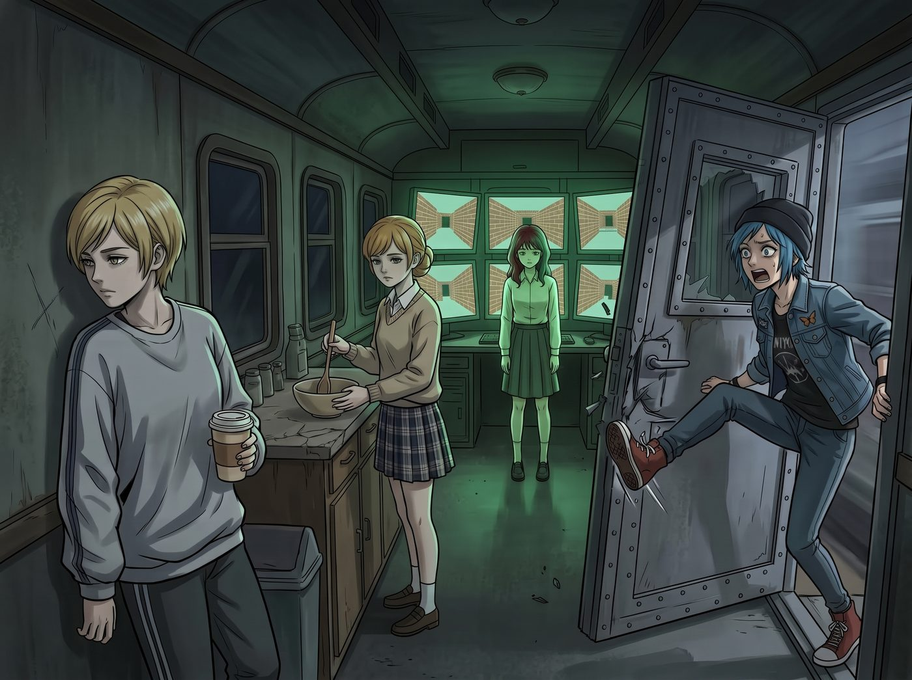

腦霧加強針

「砰！」
二號車廂厚重的車廂門被 Chloe 一腳踢開。
「女士們！流浪漢股份有限公司的兩位頂級合夥人回來了！快把紅地毯鋪好，準備迎接加州的陽光和——」
Chloe 囂張的宣告在看清車廂內的景象時，硬生生地卡在了喉嚨裡。
沒有人出來迎接，甚至沒有人回頭。車廂裡瀰漫著一股猶如《陰屍路》片場般的詭異死寂。
Victoria 穿著一件完全不搭的灰色運動衫（這對她來說簡直是視覺犯罪），雙眼無神地盯著牆上的一道刮痕，手裡端著一杯已經冷掉的即溶咖啡。
Kate 站在流理台前，拿著一根木勺，正在一個根本沒有裝任何東西的空碗裡，以一種令人毛骨悚然的緩慢節奏，順時針攪拌著空氣。
最可怕的是 Lily。這個平時大腦轉速堪比量子電腦的行政黑魔法師，此刻正雙手無力地垂在身側。她那由六塊螢幕組成的工作站上，沒有任何報表和代碼，只有六個同步播放的 Windows 98 經典「3D 迷宮」螢幕保護程式。
「妳……妳們怎麼了？」Chloe 嚥了一口唾沫，本能地退後了半步，把 Max 護在身後，「有生化武器洩漏嗎？還是 IRS 終於查上門把妳們的靈魂抽乾了？」
Victoria 緩緩轉過頭。她眨了眨眼，動作遲緩得像是機器人快沒電了。
「我們昨天……去補打了一劑疫苗……」Victoria 的聲音毫無起伏，猶如一潭死水，「副作用很強。醫生說……這叫極度腦霧（Severe Brain Fog）。我的大腦現在像是一團被水泡爛的法式海綿蛋糕。我甚至覺得……穿這件化纖運動衫挺舒服的。」
「腦霧？」Chloe 皺起眉頭。
她在街頭混了這麼多年，什麼樣的騙局沒見過。三個人同時發呆、同時裝傻，這種整齊劃一的演出，本能上就讓她覺得有點可疑。
但下一秒，她腦海裡浮現出了上一次的畫面。
那一次是真的。Victoria 攥著一張黑卡往烤箱的散熱孔裡塞，吵著要它吐魚子醬；Kate 抱著掃地機器人唱搖籃曲，要餵它吃電池；Lily 抱著一本空白筆記本，用羅馬數字算圓周率算到了小數點後一百五十位。那天她和 Max 靠著一個紅色文件夾裡的應急錦囊，才勉強把三個人安置好。
疫苗的副作用，她是親眼見識過的。
Chloe 的臉瞬間白了。她猛地衝到 Lily 面前，雙手用力搖晃著她的肩膀：「實習生！看著我！告訴我我們的營地預算還有多少！告訴我妳還能算出標準扣除額！」
Lily 的腦袋隨著 Chloe 的搖晃軟綿綿地晃動著。她推了推滑落到鼻尖的圓框眼鏡，用一種看透紅塵的虛無語氣說道：
「Chloe 學姐……我突然意識到，貨幣只是一種虛幻的社會建構。稅收……稅收也是。只要我們放棄對物質的執著，聯邦監獄也只不過是另一個包吃包住的物理空間。我剛才……把所有的帳本都放進資源回收桶了。」
「不！！！」Chloe 發出了一聲撕心裂肺的哀嚎，彷彿天塌下來了一樣，「妳這個瘋子！快點清空腦霧！妳把帳本刪了我們會被國稅局追殺到天涯海角的！」
看著 Chloe 陷入了世界末日般的恐慌，正在「攪拌空氣」的 Kate 趕緊轉過身，背對著她們，肩膀開始發出極其輕微的、可疑的顫抖。
而就在 Chloe 準備搖醒 Victoria 的時候，一直沒說話的 Max 卻冷靜地瞇起了眼睛。
作為一個能在一瞬間捕捉到光影變化的天才攝影師，Max 的「像素級觀察力」是不可能被這種拙劣的演技糊弄過去的。
Max 雙手抱胸，慢條斯理地繞著這三個「腦霧患者」走了一圈。
「非常精彩的表演。」Max 停在 Lily 的工作站前，嘴角勾起一抹看破一切的冷笑，「但有三個致命的破綻。」
Max 伸出第一根手指，指向 Victoria：
「第一，Victoria 雖然穿著醜陋的運動衫，但她腳上那雙 Prada 的羊皮拖鞋可是今天早上剛擦過保養油的。一個腦霧到連品味都喪失的老錢名媛，是不會記得給真皮拖鞋上油的。」
Victoria 僵了一下，原本無神的眼睛裡閃過一絲慌亂。
Max 伸出第二根手指，指向 Lily 的螢幕：
「第二，Lily 雖然放著 3D 迷宮的螢幕保護程式，但那副圓框眼鏡的反光騙不了人。鏡片上反射的根本不是迷宮的綠色線條，而是終端機裡正在高速運行的高階語言抓取腳本。妳在後台偷偷爬取什麼？西雅圖藝術品拍賣行的最新報價嗎？」
Lily 推眼鏡的手指瞬間定格在了半空中。
「最重要的是第三點。」
Max 走到流理台前，一把掀開了 Kate 旁邊的一塊白布。
白布下面，赫然藏著一個已經揉得完美無瑕、正在發酵的麵團，旁邊甚至還用裱花袋擠好了極其精緻的翻糖玫瑰花。
「一個腦霧患者，」Max 拿起那朵翻糖玫瑰，對著憋笑憋得臉都紅了的 Kate 挑了挑眉，「是不可能把玫瑰花瓣的邊緣捏得這麼完美的。對吧，Kate？」
「噗——哈哈哈哈哈！！」
Kate 終於忍不住了。她扔下木勺，捂著肚子爆發出一陣清脆的大笑。
她這一笑，就像推倒了多米諾骨牌。Victoria 狠狠地翻了個白眼，一把脫掉那件醜陋的運動衫，露出了裡面精緻的真絲吊帶：「我說什麼來著！我就說 Kate 憋不過五分鐘！她剛才攪拌空氣的時候我都聽到她在那裡偷笑了！」
Lily 也無奈地按了一個快捷鍵，螢幕上的 3D 迷宮瞬間消失，恢復了密密麻麻的專業報表介面。
「根據我的計算，這次整蠱的成功率原本高達 82%。但我們忽略了 Max 學姐對於光學反光和細節的像素級捕捉能力。這是一個計算失誤。」Lily 乖巧地總結道。
「妳們這群混蛋！」
Chloe 這才反應過來自己被耍了。她氣急敗壞地衝過去，一把將笑得直不起腰的 Kate 和正準備跑路的 Victoria 撲倒在沙發上，「老娘在加州給妳們挑禮物挑得嘔心瀝血，妳們居然敢拿帳單來嚇我！差點把我嚇出心臟病！」
沙發上頓時亂成一團，五個女孩在車廂裡笑鬧著，抱成一團。
那些在西雅圖商戰裡積壓的疲憊，那些在公路旅行中遇到的驚險，都在這一刻，被這種幼稚到極點的惡作劇徹底驅散了。
「好了好了，放開我，妳這隻帶著加州沙子味的垃圾熊！」Victoria 嫌棄地推開 Chloe，理了理頭髮，「說吧，妳們這次又帶了什麼回來？如果又是一根一千兩百美元的破樹枝，我現在就讓 Lily 停了妳的冷氣。」
Chloe 沒理她。她轉身走回車門口，從皮卡的後座拖出一個滿身水珠的保冷箱，砰地一聲放在桌上，打開蓋子。
裡面躺著一桶大得誇張的冰淇淋。那是她們回程經過西雅圖時，特地繞路去買的，店裡最大的尺寸。
「這是給妳的，實習生。」Chloe 把一支湯匙塞進 Lily 手裡，別過臉，「上次視訊的時候，老娘說過要親自給妳買西雅圖最大的冰淇淋。說到做到。」
Lily 愣愣地看著那桶冰淇淋，又看了看手裡的湯匙。
車廂裡安靜了兩秒。Victoria 和 Kate 對視了一眼，都沒有說話。
「……謝謝妳，Chloe 學姐。」Lily 小聲說，然後挖了一大勺，放進嘴裡。
「喂，別一個人吃光！」Chloe 又搶過一支湯匙，「剛才差點被妳們嚇出心臟病，老娘需要糖分壓驚！」
五支湯匙很快就在同一個桶裡打起了架。